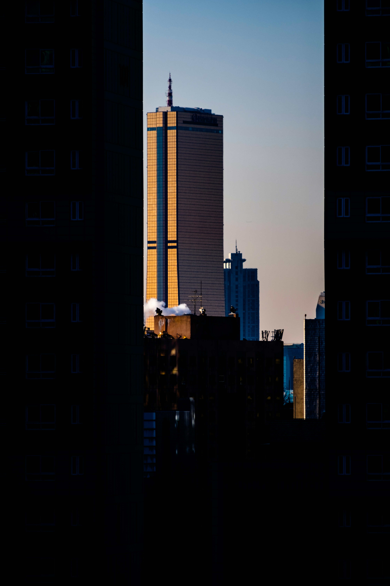

한국에 대하여

수도

서울. 한반도의 허리를 가로지르는 한강 하류에 위치하고 있으며,
대한민국 국민의 1/4 이상이 서울을 중심으로 한 수도권에서 활동하고 있습니다.
행정, 입법, 사법부의 중앙 기관이 위치하고 있으며 경제, 문화 활동의 중심지이기도 합니다.
국화
국화는 무궁화로서 꽃이 아름답고 꽃피는 기간이 길어서 우리 민족의 오랜 사랑을 받아 왔습니다.
한국의 국화 "무궁화"에서 "무궁" 이라 함은 '끝이 없다" 는 뜻으로 국가 와 민족의 영속성을 뜻합니다.